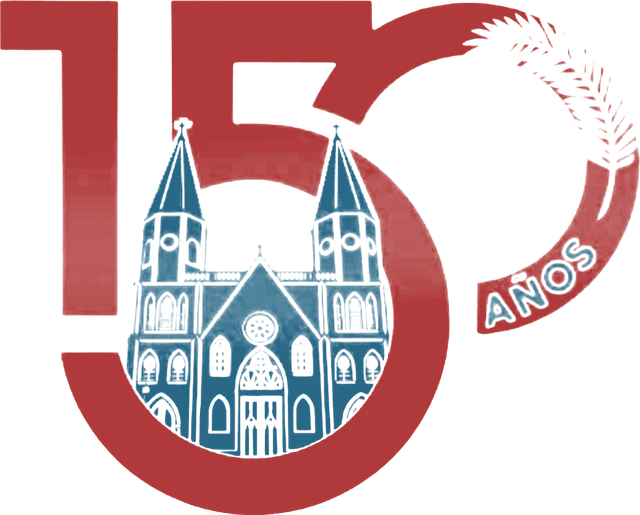
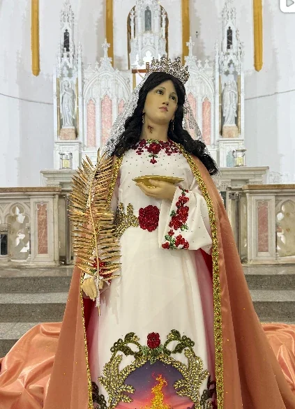
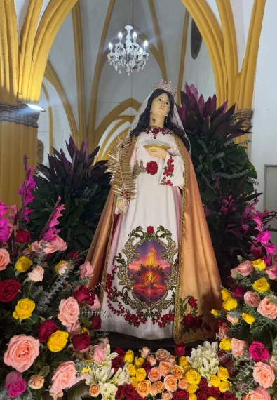
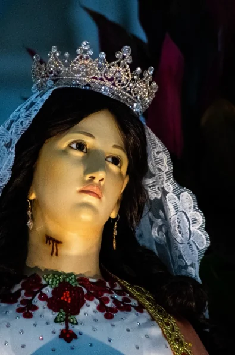
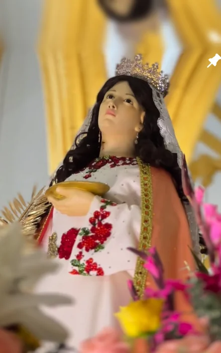
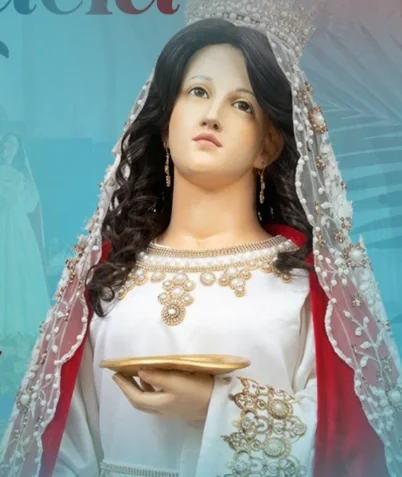

Fiestas Patronales en honor a
Santa Lucía
2026
«Fieles a la Tradición, abiertos a la Misión».




Próxima actividad
Fiestas Patronales 2026
--Días
--Horas
--Min
--Seg
Bajada · 14 novSolemnidad · 13 dic
Fiestas Patronales 2026
Programa Oficial

«Fieles a la Tradición, abiertos a la Misión»
Ven con tu familia. Santa Lucía te espera en la Casita Azul de El Empedrao.
¡Gracias, Santa Lucía!
Las Fiestas Patronales 2026 han concluido. Gracias a todos los que caminaron con nuestra Patrona. Seguimos celebrando los 150 años de la parroquia.
Volver al inicio